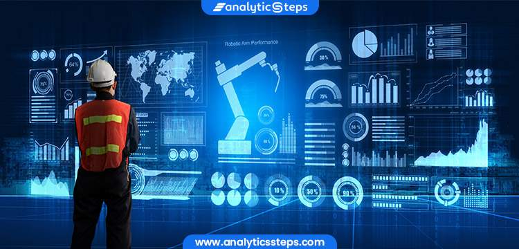

Discover how artificial intelligence is revolutionizing the construction industry with smart solutions.
Generative design techniques optimize building layouts and structures, improving efficiency and sustainability.
AI-enabled robots and drones monitor site progress, ensuring timely project completion and improving oversight.
AI combined with IoT helps manage construction fleets by optimizing performance and reducing downtime.
AI predicts risks like weather impacts or management errors, enhancing safety and preventing delays.
Autonomous machines perform repetitive tasks, addressing labor shortages and allowing workers to focus on skilled work.
Predictive analytics anticipates project issues, enabling proactive problem solving and improving efficiency.
AI automates administrative tasks like budgeting and scheduling, freeing up human resources for strategic activities.